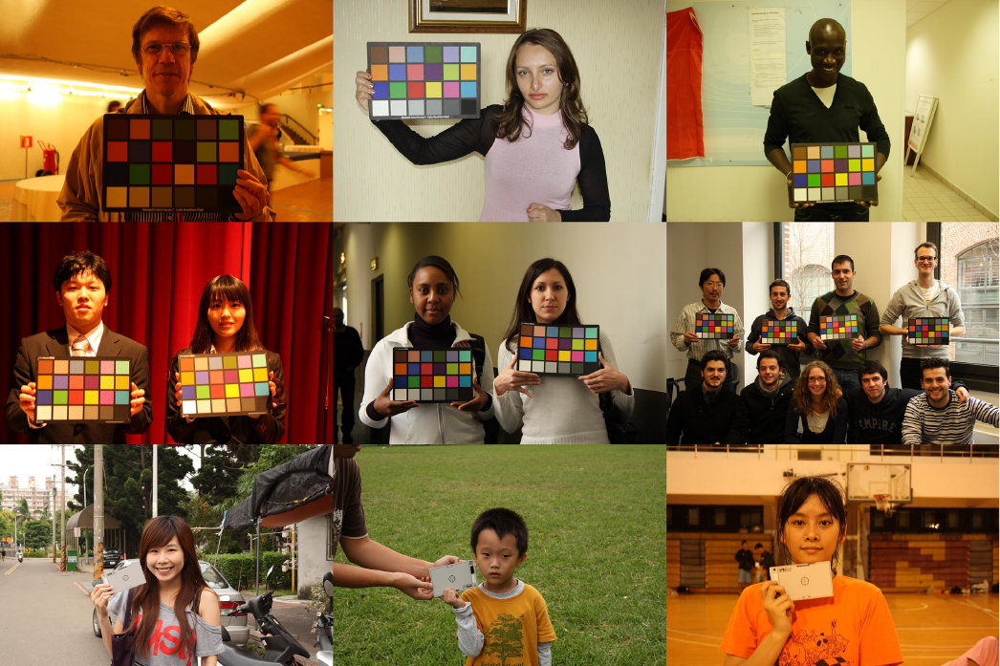
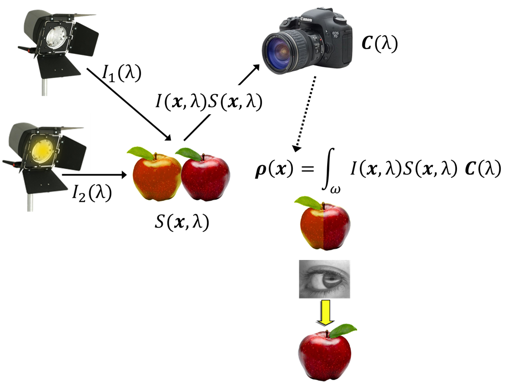
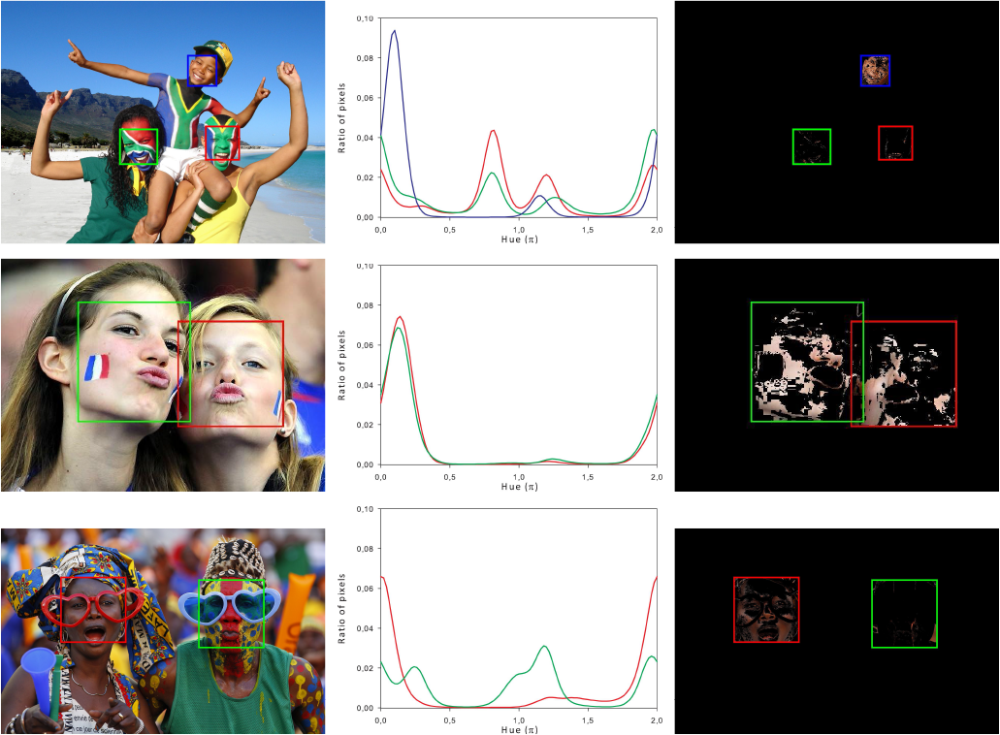

Keynote Speach 2
 Content-aware Color Constancy
Content-aware Color ConstancyProf. Raimondo Schettini
(University of Milano-Bicocca, Italy)
Abstract
Color is an essential feature of objects for a wide range of applications, such as digital photography, content-based image retrieval, object tracking/recognition, image forensics, human-computer interaction and augmented reality. Human Vision System has the remarkable capability to perceive the color of the objects in the scene mostly invariable in spite of changes in the illumination/imaging conditions. However, it is not equally simple for a machine vision algorithm to alleviate the influence of these conditions making the computer able to see like we do. In fact, when we acquire and image, the recorded color of an object is not an intrinsic property of the object itself, but it depends also on the (often unknown) illumination conditions under which the object has been acquired. Computational Color Constancy algorithms aim to estimate the actual color in an acquired scene disregarding its illuminant, rendering the color of the objects in the scene invariable in spite of changes in the illumination conditions. It can be shown that color constancy is an ill-posed problem, its solution lacks therefore of uniqueness and stability. To cope with this problem, common solutions usually exploit some heuristic assumptions about the statistical properties of the expected illuminants and/or of the reflectance of the objects in the scene. In this keynote we briefly review state-of-the-art methods and illustrate promising researches aimed to improve illuminant estimation by using visual and/or semantic information automatically extracted from the images. In particular, we present an adaptive color constancy algorithm that, exploiting the skin regions found in faces, is able to estimate and correct the scene illumination. The algorithm automatically switches from global to spatially varying color correction on the basis of the  illuminant estimations on the different faces detected in the image. An extensive comparison with both global and local color constancy algorithms is carried out to validate the effectiveness of the proposed algorithm in terms of both statistical and perceptual significance on a large heterogeneous data set of images.
  Raimondo Schettini is a full professor at the University of Milano-Bicocca (Italy). He is Vice-Director of the Department of Informatics, Systems and Communication, and head of Imaging and Vision Lab (www.ivl.disco.unimib.it). He has been associated with Italian National Research Council (CNR) since 1987 where he has leaded the Color Imaging lab from 1990 to 2002. He has been team leader in several research projects and published more than 300 papers and several patents about color imaging, image processing, analysis and classification, image and video indexing and retrieval. Raimondo is a fellow of the International Association of Pattern Recognition (IAPR) for his contributions to pattern recognition research and color image analysis.